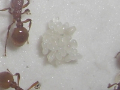
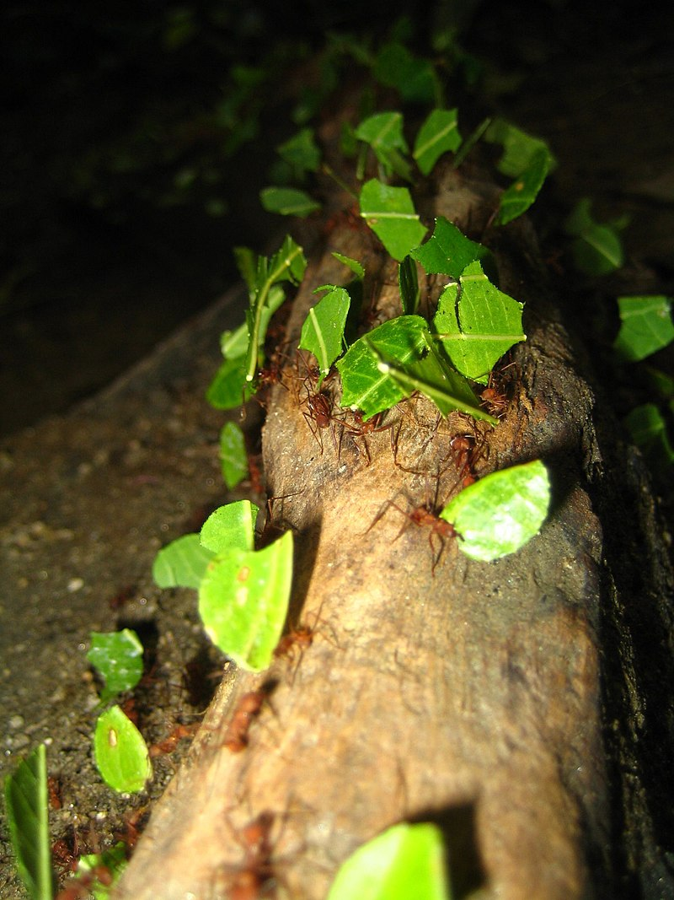

Eipflege
Ameiseneier sind meistens weichschalige,
gestreckte Ellipsoide von bis zu einem Millimeter
Länge. Nach der Eiablage tragen die Brutpflegerinnen
die Eier mittels ihrer Mandibeln in die Brutkammern,
in denen geeignete Temperatur und Luftfeuchtigkeit
herrschen. Ändert sich dieses Mikroklima durch äußere
Einflüsse (zum Beispiel Zerstörung), so werden die Eier
sofort von den Arbeiterinnen in andere Brutkammern transportiert.
Ein handbetriebenes Flurförderfahrzeug mit einer Gabel sie
wird zum Transport von leichteren Paletten benutzt.
Eischlüpfung:

Kokon
Nach einiger Zeit schlüpfen die weißen oder gelblichen,
madenförmigen Larven aus den Eiern. Sie sind mit Ausnahme
der Kopfkapsel weichhäutig, meist leicht behaart und je nach
Art mehr oder weniger beweglich. Sie sind beinlos, auch Augen
werden nicht ausgebildet. Brutpflegerinnen transportieren die
Larven mancher Arten in die Sonne, füttern sie über ihren Kropf
und reinigen sie, damit sie nicht austrocknen oder Pilze ansetzen.
Die Brutpflegerinnen füttern die Larven per „Kropf-zu-Mund“
Fütterung, Trophallaxis genannt.
Arten:
Derzeit sind mehr als 13.000 Arten beschrieben, davon etwa 200 in Europa.
Alle Arten sind staatenbildende, eusoziale Tiere (staatenbildende
Insekten), die in zum Teil riesigen Verbänden mit bis
über 20 Millionen Individuen leben. Zusammen mit den
Termiten stellen sie weltweit über 25% der tierischen
Biomasse (wenn man den Menschen wegläßt), innerhalb der
Insekten bilden die Ameisen sogar fast 40% der Biomasse!
Blattschneiderameisen mit einem Blattstück:

Die Biomasse aller Ameisen auf der Erde umfasst
mehr als die Hälfte der Gesamtbiomasse aller anderen
Insekten zusammen und übersteigt jene der Menschen
bei weitem, obwohl eine einzelne Ameise je nach Art
und Kaste nur etwa 6 bis 10 mg wiegt und 0,8 mm
(eine Art der Gattung Leptothorax) bis 25 mm (Bulldoggenameisen)
lang wird.
Ameisen als Haustiere werden in der Schweiz immer beliebter.
Mit 650 Franken die teuerste im Angebot ist die gefährliche
24-Stunden-Ameise.
Warum kaufen Leute Ameisenfarmen?
1. Beobachte Ameisen, um zu sehen, wie sie sich verhalten.
2. Ameisen sind große Starter Haustiere.
3. Pflege einer Ameisenfarm ist ein Spaß Hobby.
4. Ameisenfarmen sind unterhaltsam.
5. Inspirieren Sie eine lebenslange Liebe zu den Naturwissenschaften.
6. Ameisenhöfe lehren Kinder Verantwortung.
7. Ameisenfarmen sind preiswert.
8. Minimale Pflege ist erforderlich.
9. Erfahren Sie mehr über verschiedene Arten von Ameisen.
10. Ameisenfarmen nehmen sehr wenig Platz ein.